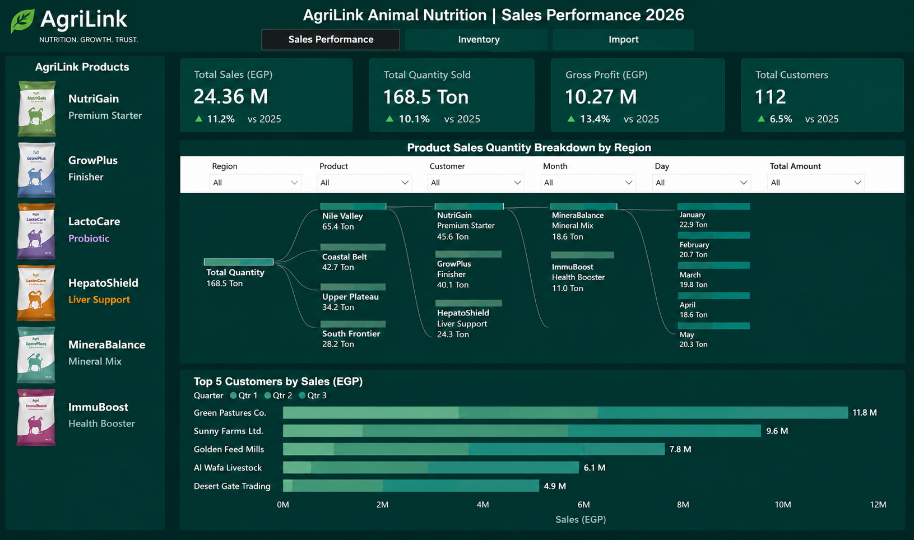
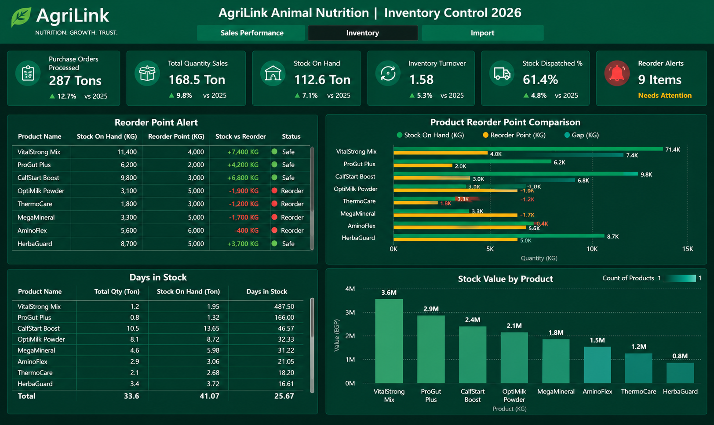
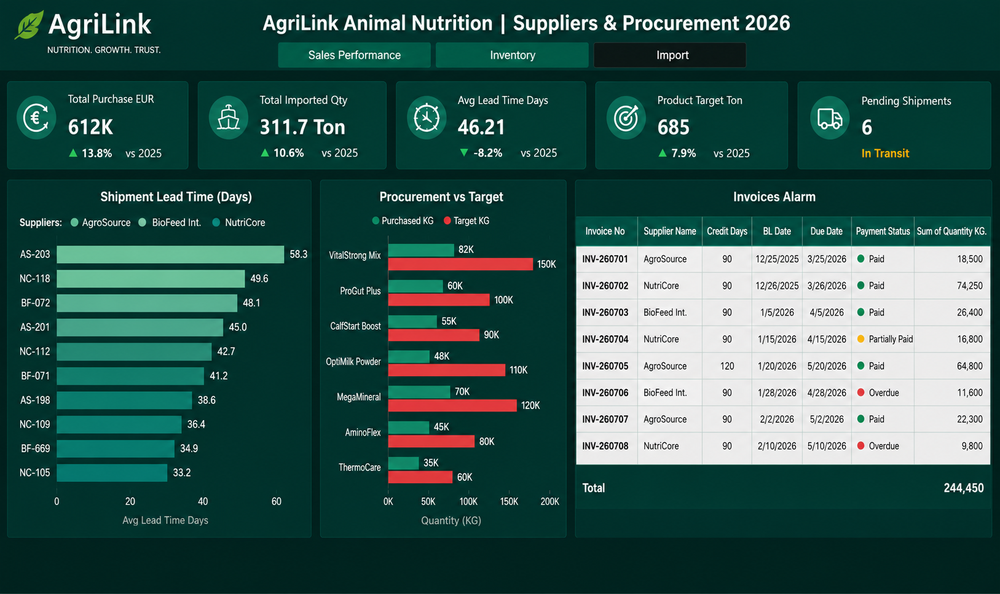
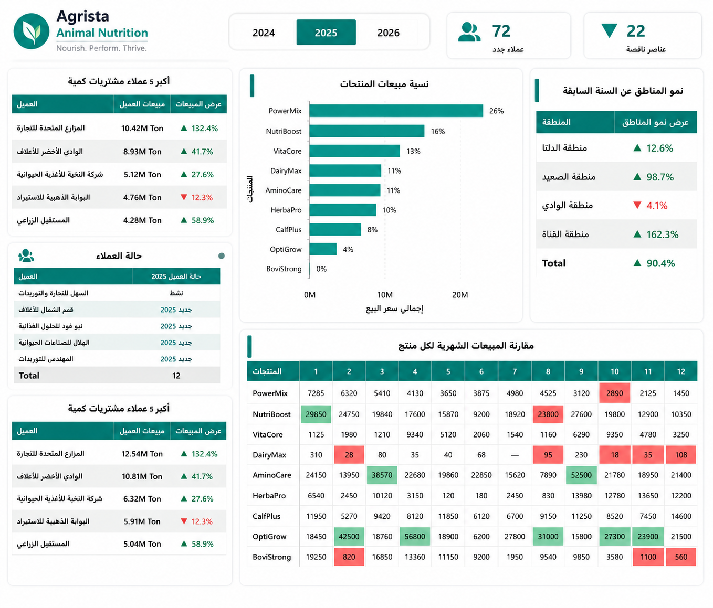
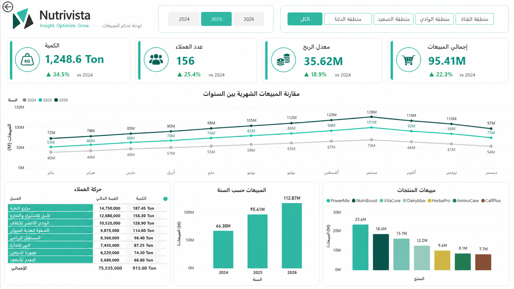
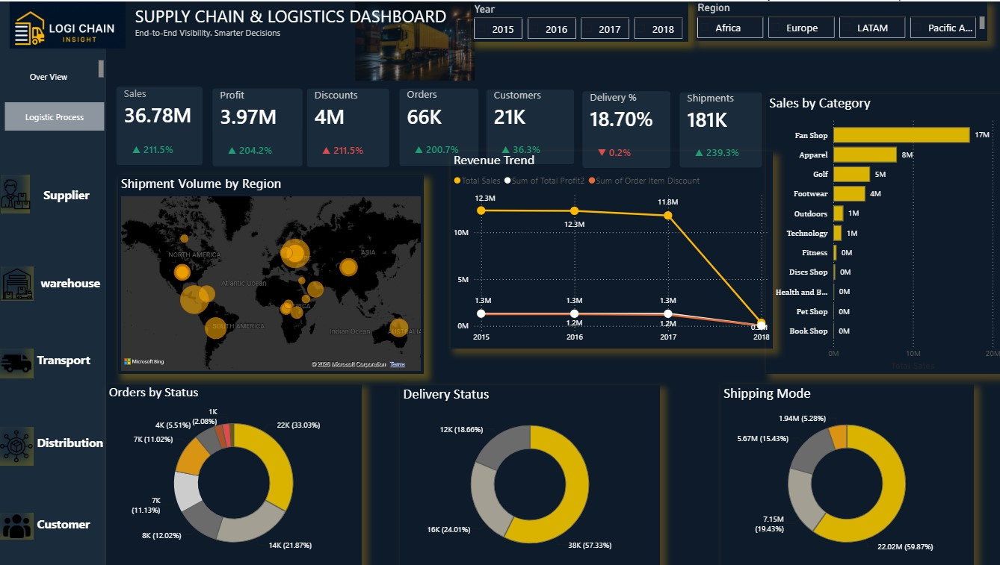
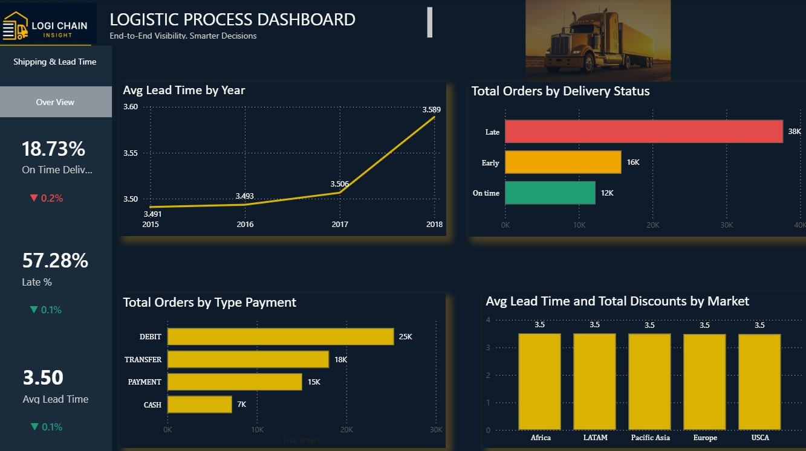

Supply Chain professional with hands-on experience in Logistics, Procurement, Inventory Management, and Business Intelligence. Passionate about transforming complex operational data into clear dashboards that support strategic decision-making and improve business performance.
I specialize in combining Supply Chain expertise with Data Analytics to help organizations improve operational efficiency, inventory performance, sales visibility, and purchasing decisions.
Experienced in Procurement, Import Operations, Inventory Planning, Logistics, Supplier Management, and Demand Planning.
Designing interactive dashboards that transform business data into strategic insights.
Building professional dashboards using Power BI, Power Query, Data Modeling, and DAX.
Analyzing operational, financial, sales, and inventory data to support business decisions.
Power BI Projects
Interactive Dashboards
Years Supply Chain Experience
KPIs Developed
An end-to-end Business Intelligence solution developed using Power BI to monitor Sales, Inventory, Procurement, Import Operations and Supplier Performance. The project enables management to make faster, data-driven decisions while reducing stock shortages, improving purchasing efficiency, and increasing operational visibility across the supply chain.
Business information was distributed across multiple Excel files, making it difficult to monitor inventory, supplier performance, shipments, and sales from one centralized location.
Designed a fully interactive Power BI reporting system that integrates sales, inventory, procurement, supplier, and shipment data into one dashboard.
Reduced manual reporting, improved visibility, supported purchasing decisions, and enabled proactive inventory management.

Provides a comprehensive overview of annual sales performance. Tracks Total Sales, Gross Profit, Quantity Sold, Customer Performance, Regional Performance, and Product Performance. Interactive product images work as slicers, allowing management to instantly analyze sales by product. The dashboard helps identify revenue drivers, best-selling products, top customers, and seasonal demand trends.

Provides full visibility of inventory health. Monitors Current Stock, Inventory Value, Inventory Turnover, Stock Aging, Days in Stock, Fast-moving Products, Slow-moving Products, and Reorder Point Status. The dashboard also predicts the optimal purchasing date by combining supplier Lead Time with product consumption rates. This allows procurement teams to place purchase orders before inventory reaches critical levels, reducing stockout risks while avoiding unnecessary overstock.

Tracks international procurement activities, incoming shipments, supplier lead time, shipment status, target achievement, supplier invoices, payment due dates, and financial obligations. The dashboard gives management complete visibility over imported products, pending shipments, supplier performance, and procurement progress.
A Business Intelligence solution developed to analyze three years of sales performance. The project enables management to track revenue and profit growth, identify top-performing products and customers, compare regional and seasonal trends, and anticipate future demand to support smarter purchasing decisions.
The company needed a clear view of sales performance and customer behavior across multiple years to support growth planning, demand forecasting, and purchasing decisions.
Developed an interactive Power BI solution that compares sales, customers, products, and regional performance across 2024, 2025, and 2026.
Enabled management to track revenue and profit growth, identify each product's best-selling month, monitor customer retention and churn, and better anticipate purchasing needs to avoid running out of stock.

This dashboard gives a deep dive into sales performance for a selected year (2024, 2025, or 2026). Key insights include:
- Top 5 Customers by Purchase Volume, with Growth vs Previous Year
- New Customers Acquired and Total Active Customer Count
- Product Sales Share (% of Total Revenue per Product)
- Regional Growth Compared to the Previous Year
- Month-by-Month Sales Comparison for Every Product
By pinpointing the strongest and weakest month for each product, this dashboard helps time purchasing decisions so products stay in stock during their peak selling months.

Provides a complete, three-year view of sales growth and momentum. The dashboard tracks:
- Quantity Sold, Customer Count, Profit Margin, and Total Sales — each vs Previous Year
- Monthly Sales Trend, Compared Side-by-Side Across 2024, 2025, and 2026
- Customer Movement, Highlighting Top Customers and Lost Customers
- Year-over-Year Sales Comparison
- Product Sales Ranking by Total Revenue
These insights show the real growth rate in profit, sales, and customer base, helping forecast future order volumes and back purchasing decisions with solid historical trends.
A two-page Business Intelligence solution analyzing global supply chain and logistics performance using DataCo's dataset (2015–2018), across five global markets. The project uncovers profitability and delivery issues that were hidden behind surface-level growth metrics.
On the surface the business looked healthy, since the customer base kept growing. In reality, discounts had grown so large that in some years profit fell below the discount total, causing losses in specific markets and products. Orders were actually declining even as customers increased, and two shipping modes arrived at nearly the same time despite one costing far more than the other with no clear justification.
Built a two-page interactive Power BI report: an Overview page tracking sales, profit, discounts, orders, customers, and shipments by year and region, and a Logistic Process page focused on delivery performance, lead time trends, payment types, and market-level comparisons.
Exposed that profit erosion was driven by discounting rather than sales volume, revealed that customer growth was masking a decline in orders, and flagged a shipping mode with no delivery-time benefit despite a much higher cost — giving management concrete levers to fix pricing, discount policy, and shipping strategy.

Tracks overall business health across 2015–2018 and five global markets. Key insights include:
- Sales, Profit, Discounts, Orders, Customers, Delivery %, and Shipments, Each with Year-over-Year Growth
- Revenue Trend Comparing Total Sales, Profit, and Discounts — Revealing Discounts Eating Into Profit Over Time
- Shipment Volume by Region on an Interactive World Map
- Sales by Category, Ranked by Revenue
- Orders by Status, Delivery Status, and Shipping Mode
This is the page where the mismatch between rising customers and falling orders first became visible.

Focuses on delivery performance and lead time across the same period. Key insights include:
- On-Time Delivery %, Late %, and Average Lead Time, Tracked Year over Year
- Avg Lead Time by Year, Showing Delivery Time Creeping Upward
- Total Orders by Delivery Status, Showing the Majority of Orders Arriving Late
- Total Orders by Payment Type
- Avg Lead Time and Total Discounts Compared Across Every Market
This page confirmed that two shipping modes had almost identical delivery times, meaning the pricier option offered no real benefit — and that delivery delays were systemic rather than tied to any one region.
A quick walkthrough of the Logistic Process dashboard, showing the Year and Region filters updating every KPI, chart, and map in real time.
The main tools and technologies I use to build Business Intelligence, Data Analytics, and Supply Chain Analytics solutions.
I am currently open to opportunities in Data Analytics, Business Intelligence, Supply Chain Analytics, and Logistics Analytics. Feel free to contact me.